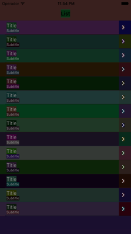

Ugly
Korey Hinton onWhen it comes to debugging user interface that is really hard to see, uglier is better. I created a simple debugging tool that can help you to see what the views in your app really look like by applying background colors to all views and optionally allowing you to show all transparent or hidden ones.
Random Colors are Ugly
In case you didn't realize, assigning random colors can make things look really ugly:
Just Call the ugly() function
Using the ugly function is easy:
ugly()
You'll want to wait until all your user interface elements are loaded on a particular view controller. So go to that view controller's file and call it in viewDidAppear:
override func viewDidAppear(animated: Bool) {
super.viewDidAppear(animated)
// code
ugly()
}
Advanced Options
Since heck I'm traversing the view hierarchy anyways why not allow you to make transparent views opaque and hidden views visible if you want to?
ugly(makeVisible: true, makeOpaque: true)
Save some time
Bookmark this utility function or make your own so that when you need to debug the user interface you don't have to take a bunch of time to go set a bunch of views to different colors and have to remember to set them back. Just do this one function call and remove it afterwards. Check it out on my github: https://github.com/koreyhinton/iosdebug and download the Ugly.swift file.